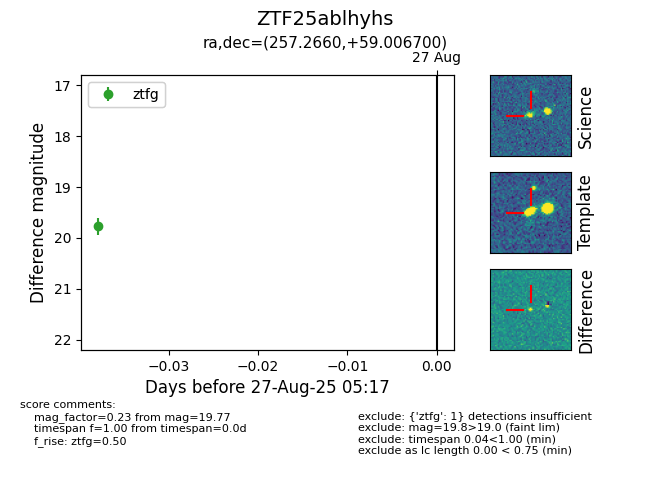

Target ZTF25ablhyhs at 2025-08-27 06:02, see:
FINK: fink-portal.org/ZTF25ablhyhs
Lasair: lasair-ztf.lsst.ac.uk/objects/ZTF25ablhyhs
ALeRCE: alerce.online/object/ZTF25ablhyhs
alt names
ZTF25ablhyhs (ztf,fink)
coordinates:
equatorial (ra, dec) = (257.2660,+59.00670)
galactic (l, b) = (87.8604,+36.07576)
photometry
last ztfg=19.77, ztfr=19.99
1 ztfg, 1 ztfr detections
